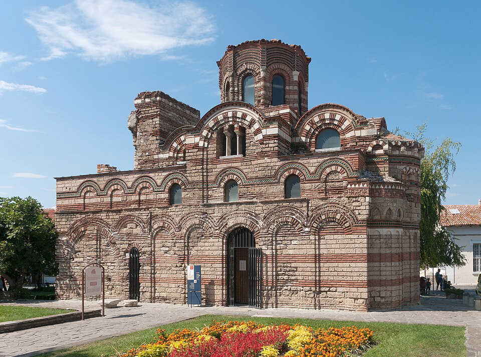
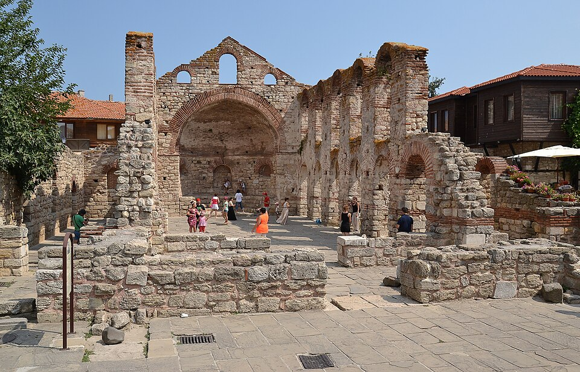
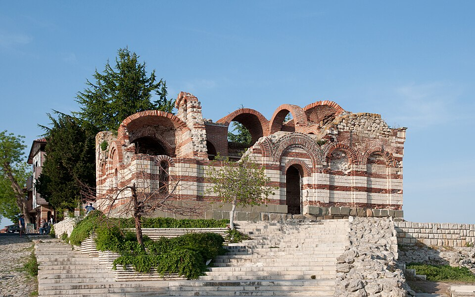
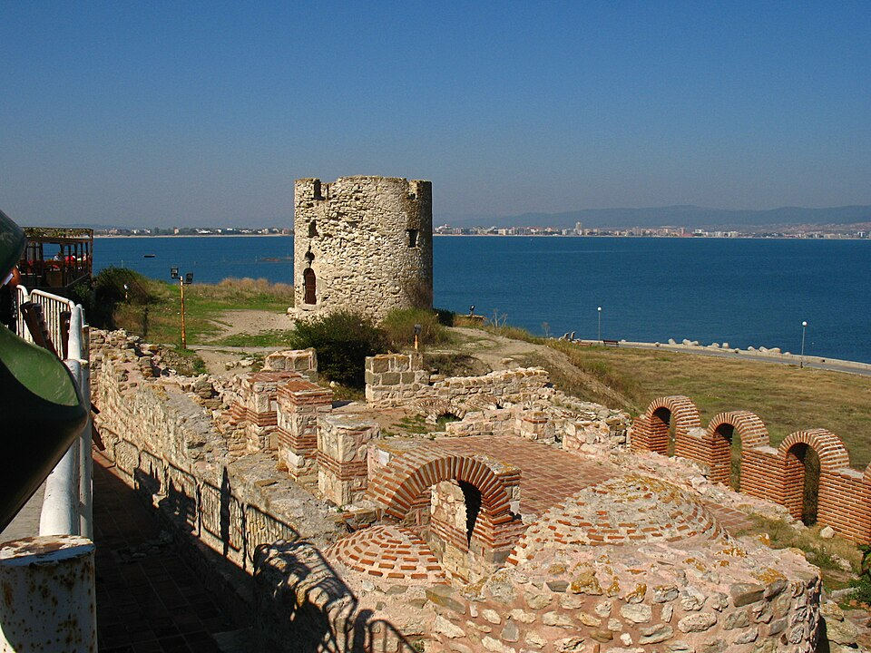
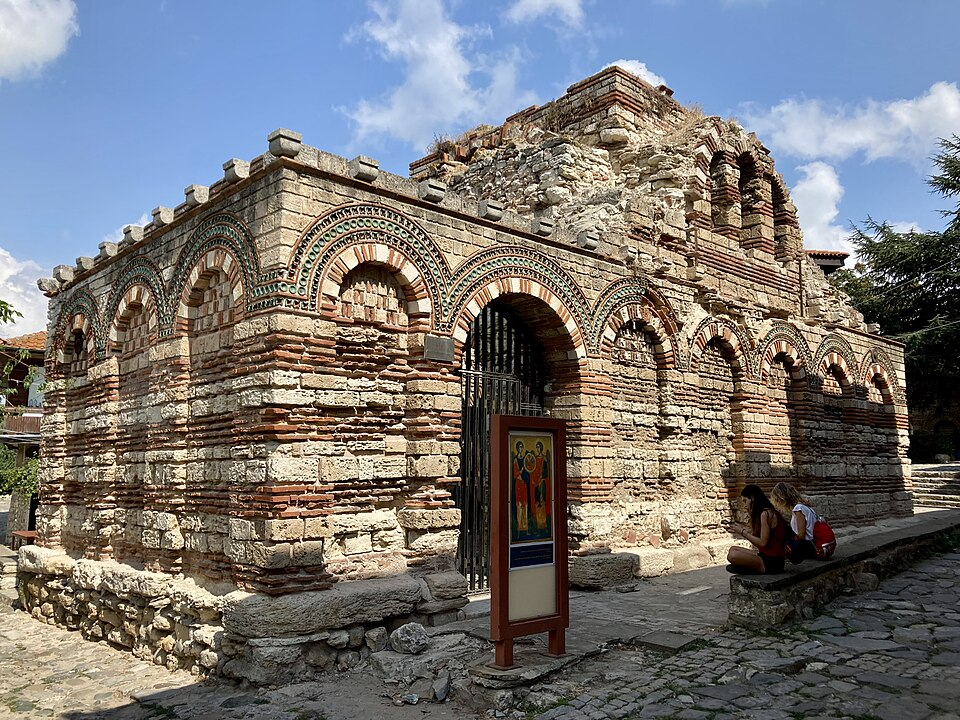

Церковь Христа Пантократора
XIV векГлавный символ Несебра. Славится своим нарядным фасадом, где ряды светлого камня чередуются с красным кирпичом и вставками из зеленой глазурованной керамики.
Каталог пяти главных и наиболее сохранившихся сооружений острова, охраняемых ЮНЕСКО.

Главный символ Несебра. Славится своим нарядным фасадом, где ряды светлого камня чередуются с красным кирпичом и вставками из зеленой глазурованной керамики.

Величественные открытые руины ранневизантийской Митрополии. Огромная трехнефная базилика без крыши, сквозь арки которой живописно просвечивает небо.

Недействующий храм на самом южном обрыве острова. Несмотря на разрушения от землетрясения 1913 года, сохранил фантастическую по красоте каменную кладку.

Уединенные руины на северном мысе полуострова. Древние камни базилики омываются морскими волнами, передавая подлинную атмосферу ушедших эпох.

Яркий образец средневекового болгарского зодчества с глубокими нишами и сложным арочным узором на кирпичных стенах.